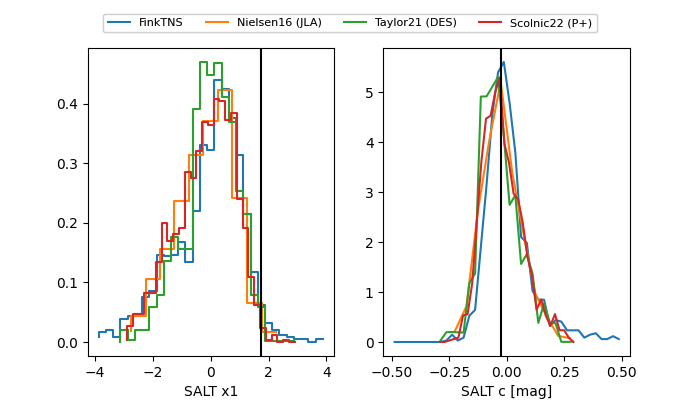

FINK: ZTF25ablhwja
Lasair: ZTF25ablhwja
ALeRCE: ZTF25ablhwja
TNS: 2025vis
YSE: 2025vis
ZTF25ablhwja (ztf,fink)
2025vis (tns,yse)
ATLAS25kum (atlas)
equatorial (ra, dec) = (310.0114,+1.08154)
galactic (l, b) = (47.1160,-23.42000)

last atlasc=18.66, atlaso=18.92, ztfg=19.04, ztfr=18.88
1 atlasc, 4 atlaso, 20 ztfg, 11 ztfr detections